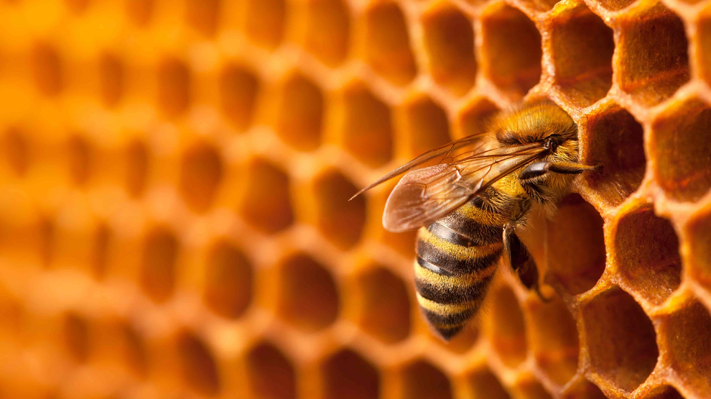

25 MAY 2025 | BY EMILY LOH
Silhouette of two people connected by illustrated waves of telepathy, demonstrating collective intelligence.
You scroll. You watch. You double-tap.
Whether you’re on YouTube, TikTok, or Instagram, you probably find yourself often consuming a variety of media forms. You watch a Short about some foreign movie you’ve never seen before, narrated by a robotic male voice. You stare wide-eyed as a TikTok influencer tells you how to perform a 5-minute hack that you hope will be useful to you in the future. You mark a connection’s post with ‘Celebrate’ when they post their latest LinkedIn updates. And then you move on with your life.
Every minute, every second our fingertips are busy on our devices we consume information. Our brains are constantly powering through the stimulation from our screens and even if our consciousness doesn’t explicitly acknowledge the new information, our brain has already finished processing.
And as our devices quietly learn more about us, it becomes harder to tell when we’re in control and when we're simply responding.
Now imagine this: you open your eyes from a peaceful slumber and the first thing you do is blink several times at the ceiling. Instantly, your bedroom comes alive, attuned to your physical reactions. Your bed adjusts itself to prop you up in a sitting position, the air in your room gently warms you awake, and the curtains automatically pull open, revealing the sci-fi futuristic world you imagined as a child.
The technology that decorates your house informs you of the weather outside and makes your Tuesday morning coffee exactly how you like it. Information slips right into your hand whether it be a reminder about your afternoon meeting or an urgent short notice calling all residents to the lobby right now. Barely thirty minutes after waking, you find yourself in the lobby where everyone in the building is present, even the 78-year-old grandma from the 14th floor. You’ve never spoken to her, but somehow you know she has seven Persian cats, a son in Singapore, and a bad hip that flares up when it rains. For what seems like an eternity, everyone stands there—silent, motionless, as if waiting for instructions they don't remember receiving. Then somebody finally speaks up, “Why are we here?”
Huh. Yeah. Why are we here?
You think about it and thinking suddenly feels almost foreign. Like some part of your brain is just catching up to what your body has already done. The truth is you didn’t really decide to come down here. You responded to something—a prompt, a suggestion, almost like a voice in your head or a routine instinct.
That’s the unsettling beauty of a hivemind.
What is the Hivemind?
In the 20th century, biology used the term ‘hivemind’ to describe the behaviors of bugs, namely bees and ants as they work together in a colony with collective intelligence. Science-fiction authors like H.G. Wells, Olaf Stapledon and James H. Schmitz would take this concept and apply it to their literature, sharing a fictional view of how humans (or aliens) would behave if they were social insects as well.
The force that is present when bumblebees, for example, work together is undeniably a powerful one. These creatures have a complex social system that allows each player in the game to have a specific role in the hive. They keep each other warm and cool, share foods, care for the queen, make honey, and protect their home. They aren’t following the concept of a hivemind, rather they already are. These collective actions protect them and keep their society alive and well.
But, when problems strike the colony, it can destroy their whole ecosystems. Bees become anxious the moment the hive has been ambushed. The shared feeling causes them all to be more defensive, making every bee significantly more stressed. And, in dire situations like the death of the queen or mass migration of the workers, colonies are at risk of going extinct because they cannot access the collective intelligence that individual bees depend on to survive.
Now, we aren’t a swarm of bumblebees but with today’s technology, we are starting to behave with a shared instinct socially, whether we like it or not. We are still far from a perfect hivemind but, in this era of AI and technology, we let data and algorithms easily shape our decisions. We’ve gone from hitting the books and asking around, to searching Google, waking Siri for help, and depending on Twitter for news.
It’s fast and convenient.
Over time, the masses have begun to trust and rely on the information that slips into our lives with ease. But trust and knowledge come with risks. In this series, we will be exploring a range of issues that stem from the technology hivemind:
- Many Wrongs Make a Right: We’ll first visit some classic psychological experiments on social conformity that warns us of the risks of following the crowd. You may feel like you are consciously making decisions and creating your train of thought when working with others. But what if your brain is entirely rewiring how you understand the situation?
- Blind with Sight: While scrolling, searching, and surfing the internet, we trust influencers, websites that don’t have suspicious ads, and proactive content with little to no hesitation. We claim we know it all because Dr. Google tells us why our stomach hurts or Professor YouTube teaches us how to cook potato pavé. But who is behind all this information and what is their intention?
- From Thin Air: With the power of social media, anybody is now equipped with a voice and a strong one. We’ll explore how a simple belief can grow into a “shared truth” over a few thousand likes and views even if the idea came from thin air. Are we using our freedom of speech or just surrendering our autonomy to think?
- The AI Queen Bee: As bees follow the queen instinctively and build their hives around the act of working for the queen, we have started to shape life around AI and using this powerful tool to drive our financial and professional lives, our academic and curious minds, and our cars as well. When every move generated sounds and looks right, how long before we forget how to question it?
- Who Are You?: There may come a time when we are more than just a data source for the hivemind. As information builds and responds to our feedback, we will become one with the hivemind. At that point, are you still choosing who you are when technology drives your every decision?
Like bees that can’t survive without their hive, we may find ourselves unable to function without the internet telling us what to believe, what to feel, and what to do next. My hope for this series is to dive deep into what this 21st-century change means—for the future of the world’s truths, the art of thought, and the fragile beauty of identity.